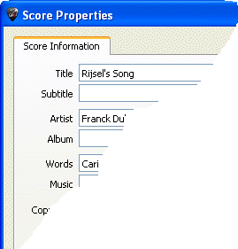
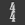
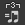

Mit Guitar Pro 6 kõnnen Sie auf mehreren Dateien arbeiten, die als Registerkarten am oberen Rand der Partitur erscheinen.
Um eine neue Partitur mit Guitar Pro zu erstellen, folgen Sie bitte folgende Schritte:
Wählen Sie bitte in der Menüleiste Datei > Neu aus.
Dieses Menü erstellt eine neue Partitur mit dem gewählten Modell (die Spuren
werden mit Standard-Presets passender erstellt) oder ein leeres Dokument
in einer neuen Registerkarte und õffnet das Fenster Eigenschaften
der Partitur.
|
 |
Dieser Dialog erlaubt Ihnen das Erfassen gesamter Informationen, wie Titel, Namen des Künstlers etc.
Klicken Sie auf OK, um zu bestätigen.
Durch die Definition Ihrer Modelle, kõnnen Sie einige Voreinstellungen einstellen (Künstler, Songtexte, Musik ...).
|
In Welt:
Bearbeiten klicken Sie auf , um das Fenster Tonart
zu õffnen.
Wählen Sie das Versetzungszeichen und die Tonart (Dur oder Moll) der Partiturstimme
aus. Falls Sie sich im Moment diese Informationen nicht kennen, kõnnen
Sie auch den eingestellten Standardwert (C Dur)übernehmen, weil hierdurch
nicht, bei nachträglichen Änderungen, das allgemeine Notenbild geändert
wird.
Klicken Sie auf OK, um die Einstellungen zu speichern.
Das Menü Ansicht > Konzert-Tonart kann die Konzert-Tonart oder die Transposition-Tonart aktivieren.
Die Tonart des Konzerts ist die des Dirigents, die angezeigten Noten sind diejenigen, die man wirklich hõrt.
Die Transposition-Tonart ist die des Musikers, sie ist meist für Blasinstrumente verwendet, da sie sich auf mehr auf einen Fingersazt bezieht als auf eine genaue Melodie. Zum Beispiel, für eine Klarinette in B, ist B als C angezeigt (und die andere Noten werden den gleichen Unterschied haben, was auch beim Vorzeichen zum Ausdruck kommt: eine B-Tonart wird ein Vorzeichen ohne Veränderung des Schlüssels haben, wie dieübliche C-Tonart).
Der Notenschlüssel (Violin- oder Bassschlüssel) wird automatisch durch das Instrument bestimmt, aber Sie kõnnen den verändern, indem Sie auf in der Welt: Instrument klicken
Klicken Sie auf

(oder Menü: Takt > Taktangabe) um das Fenster Taktangabe zu õffnen
Wählen Sie den Takt aus, der für den Partiturabschnitt gelten soll (Standardwert ist ein 4/4 Takt). Die Taktangabe bestimmt die Anzahl der Notenanschläge innerhalb des Taktes.
Klicken Sie auf OK, um die Einstellugen zu speichern.
Klicken Sie auf

, um den Shuffle des Stückes auszuwählen. Guitar Pro schlägt 6 verschiedene Shuffles vor :
Klicken Sie auf OK, um die Einstellugen zu speichern.
Doppelklicken Sie auf den Namen der Spur in der Gesamtansicht, um das Dialogfenster der Spureigenschaften zu õffnen.
Dieser Dialog ermõglicht Ihnen die Spureigenschaften , wie Namen, Abbkürzung, Notenschrift der Notensystemen (Slah-tabulaturen, Standard-Notenschrift) anzugeben.
Klicken Sie auf OK,
um die Einstellugen zu speichern.
Sie kõnnen Bank, Stimmung, Kapodaster in Welt
:Instrumente auswählen.
Jetzt sind Sie bereit, die Noten in die Partitur einzugeben. Sie kõnnen auch neue Spuren hinzufügen.